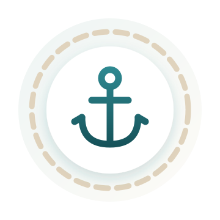

Nachricht erhalten
Vielen Dank!
Ihre Nachricht ist bei uns angekommen. Wir melden uns in Kürze bei Ihnen – in der Regel innerhalb von 1–2 Werktagen.

Ihre Nachricht ist bei uns angekommen. Wir melden uns in Kürze bei Ihnen – in der Regel innerhalb von 1–2 Werktagen.
